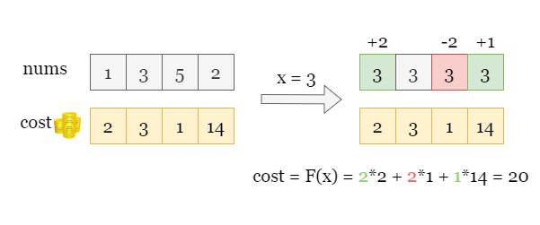
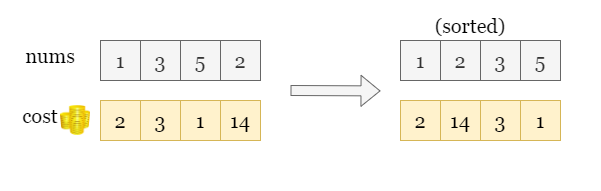
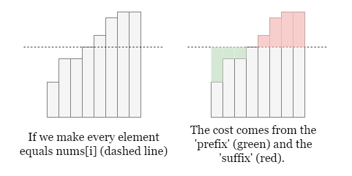
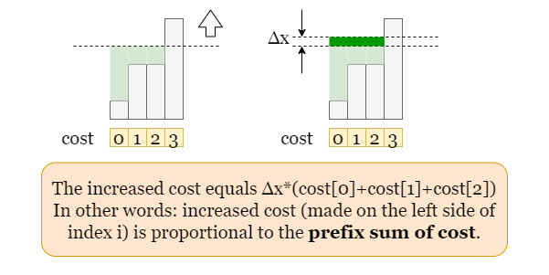
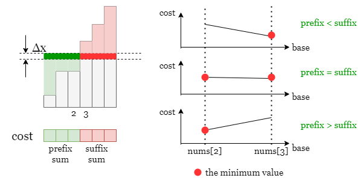
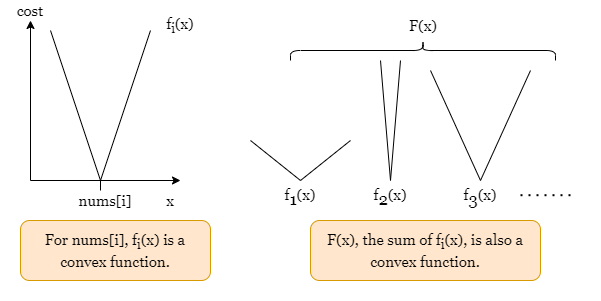
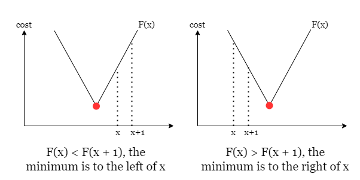

1 / 6
As shown in the picture below, we choose 3 as the base, i.e., make every element equal
to 3, resulting in a cost of 20. For convenience, we will refer to the total cost (with a
base of x) as F(x).

Let's say that we take x as the base and we do not yet know the relation between x and the
total cost F(x). Naturally, we want to try all possible bases to find the one that brings the minimum
cost, however, there are infinite bases. Fortunately, we don't need to try every x which is
impractical. We just need to try every nums[i] as the base. The proof will be given
later!
If we take nums[i] as the base, we need to increase those numbers that are smaller than
nums[i] and decrease those numbers that are larger than nums[i]. Let's first roughly
estimate the time complexity of this approach:
Assume there are nn integers in nums, for each base nums[i],
we want to get the cost of making every element equal nums[i], this step needs an iteration over nums
to add up each individual cost. Therefore, this approach needs nn iterations for each element in the input and
takes O(n2)O(n ^ 2) time at least. It might not pass the time limit.
We could refine it by sorting nums first, don't forget to match cost[i] with its original
nums[i].

This way, instead of iterating through nums every time, we only need to get the
difference between the cost made by the current base nums[i] and that made by the
previous case nums[i - 1]. How does that happen? Let's look at the following picture, the cost consists
of two parts:
nums[i] (we call it 'prefix' part).nums[i] (we call it 'suffix' part).
Take a closer look at the 'prefix' part. Assume the current base x is a value between
nums[2] and nums[3], if we increase it by Δx, the 'prefix' cost is increased
by Δx * (cost[0] + cost[1] + cost[2]), in other words, the increment of the cost is proportional to the
prefix sum of cost. Similarly, the decrement of the cost is proportional to the suffix sum of cost.
It implies that we shall build the prefix sum array of the costs, then these prefix and suffix terms, as well as the
change of the total cost, can be calculated in constant time.

Recall that we have left an unproven conclusion: we only need to try every nums[i] as the base. The
reason is that the total cost F(x) is monotonic when the x is in the
range of two adjacent elements(nums[i] and nums[i + 1]).
As shown in the picture below, the current base x is within nums[2] and
nums[3], if we increase x by Δx, the change of the total cost is Δx *
(prefix - suffix), which is monotonic. Therefore, either nums[2] or nums[3] is
the base that brings the minimum cost (within the range [nums[2], nums[3]]).

Therefore, we only need to try each nums[i] as the base, starting with nums[0]. Then we
will iterate over the rest of the sorted nums, for nums[i], we don't bother iterating over
nums again, but use the prefix sum array to get the cost difference between F(nums[i]) and
F(nums[i - 1]).
Take the following slides as a detailed example:
Collect every pair of nums[i] and cost[i] in the array numsAndCost and
sort it according to nums[i].
Build a prefix sum array prefixCost to record the prefix sum of the cost in the sorted numsAndCost.
Start with nums[0], calculate the cost of making every element equal nums[0] as
totalCost.
Iterate over nums starting from nums[1], for every base nums[i]:
Calculate the different between the current base and the previous base as gap = nums[i] -
nums[i - 1].
The current totalCost made by nums[i], compared with the previous cost made
by nums[i - 1], is increased by gap times the prefix sum of costs prefixCost[i
- 1] and decreased by gap times the suffix sum of costs prefixCost[n -
1] - prefixCost[i - 1].
Record and update the smallest totalCost we have met so far as answer.
Once the iteration ends, return answer.
Java
class Solution {
public long minCost(int[] nums, int[] cost) {
// Sort integers by values.
int n = nums.length;
int[][] numsAndCost = new int[n][2];
for (int i = 0; i < n; ++i) {
numsAndCost[i][0] = nums[i];
numsAndCost[i][1] = cost[i];
}
Arrays.sort(numsAndCost, (a, b) -> a[0] - b[0]);
// Get the prefix sum array of the costs.
long[] prefixCost = new long[n];
prefixCost[0] = numsAndCost[0][1];
for (int i = 1; i < n; ++i)
prefixCost[i] = numsAndCost[i][1] + prefixCost[i - 1];
// Then we try every integer nums[i] and make every element equals nums[i],
// Start with nums[0]
long totalCost = 0l;
for (int i = 1; i < n; ++i)
totalCost += 1l * numsAndCost[i][1] * (numsAndCost[i][0] - numsAndCost[0][0]);
long answer = totalCost;
// Then we try nums[1], nums[2] and so on. The cost difference is made by the change of
// two parts: 1. prefix sum of costs. 2. suffix sum of costs.
// During the iteration, record the minimum cost we have met.
for (int i = 1; i < n; ++i) {
int gap = numsAndCost[i][0] - numsAndCost[i - 1][0];
totalCost += 1l * prefixCost[i - 1] * gap;
totalCost -= 1l * (prefixCost[n - 1] - prefixCost[i - 1]) * gap;
answer = Math.min(answer, totalCost);
}
return answer;
}
}
Python3
class Solution:
def minCost(self, nums: List[int], cost: List[int]) -> int:
# Sort integers by values.
num_and_cost = sorted([num, c] for num, c in zip(nums, cost))
n = len(cost)
# Get the prefix sum array of the costs.
prefix_cost = [0] * n
prefix_cost[0] = num_and_cost[0][1]
for i in range(1, n):
prefix_cost[i] = num_and_cost[i][1] + prefix_cost[i - 1]
# Then we try every integer nums[i] and make every element equals nums[i],
# Start with nums[0]
total_cost = 0
for i in range(1, n):
total_cost += num_and_cost[i][1] * (num_and_cost[i][0] - num_and_cost[0][0])
answer = total_cost
# Then we try nums[1], nums[2] and so on. The cost difference is made by the change of
# two parts: 1. prefix sum of costs. 2. suffix sum of costs.
# During the iteration, record the minimum cost we have met.
for i in range(1, n):
gap = num_and_cost[i][0] - num_and_cost[i - 1][0]
total_cost += prefix_cost[i - 1] * gap
total_cost -= gap * (prefix_cost[n - 1] - prefix_cost[i - 1])
answer = min(answer, total_cost)
return answer
Let nn
be the length of the input array nums.
Time complexity: O(n⋅logn)O(n \cdot \log n)
We need to sort the all integers numAndCost, it takes O(n⋅logn)O(n \cdot \log n) time.
Then we iterate over the sorted numAndCost and calculate the change of
totalCost at each step, it takes O(n)O(n) time.
In summary, the time complexity is O(n⋅logn)O(n \cdot \log n).
Space complexity: O(n)O(n)
prefixCost of size n, it takes O(n)O(n) space.
This approach is based on one theorem: a linear combination (with non-negative coefficients) of convex functions is convex.
You might find more information of convex function here
Here, we define fi(x)f_i(x) as the cost function if nums only contains one
element nums[i].
If nums only contains nums[i], the cost function fi(x)f_i(x) is convex, as shown in the picture below.
If nums consists of multiple elements, the cost F(x)F(x) is the combination of every fi(x)f_i(x), that is F(x)=f1(x)+f2(x)+...F(x) = f_1(x) + f_2(x) + ... where
each fi(x)f_i(x) is convex.

Therefore, the total cost function F(x)F(x) is convex and has the
minimum mi in the range [min(nums), max(nums)].
Therefore, we can use binary search to locate the minimum of this convex function. Start with setting the boundaries
of the search space as left = min(nums) and right = max(nums), we cut the search space
into two halves by mid = (left + right) / 2. Then we shall determine which part contains the minimum
cost. This can be done by comparing the cost of two adjacent bases:

We continue the binary search until we reach the base that brings the minimum cost.
left = min(nums) and right =
max(nums).
2）While left < right:
mid using integer division mid = (left + right) / 2.F(mid) and F(mid + 1).F(mid) > F(mid + 1), cut the left half by setting left = mid + 1. Otherwise, cut
the right half by setting right = mid. Then repeat step 2.
left once the search ends.
Java
class Solution {
// Get the cost of making every element equals base.
private long getCost(int[] nums, int[] cost, int base) {
long result = 0L;
for (int i = 0; i < nums.length; ++i)
result += 1L * Math.abs(nums[i] - base) * cost[i];
return result;
}
public long minCost(int[] nums, int[] cost) {
// Initialize the left and the right boundary of the binary search.
int left = 1000001, right = 0;
for (int num : nums) {
left = Math.min(left, num);
right = Math.max(right, num);
}
long answer = getCost(nums, cost, nums[0]);
// As shown in the previous picture, if F(mid) > F(mid + 1), then the minimum
// is to the right of mid, otherwise, the minimum is to the left of mid.
while (left < right) {
int mid = (right + left) / 2;
long cost1 = getCost(nums, cost, mid);
long cost2 = getCost(nums, cost, mid + 1);
answer = Math.min(cost1, cost2);
if (cost1 > cost2)
left = mid + 1;
else
right = mid;
}
return answer;
}
}
C++
class Solution {
public:
// Get the cost of making every element equals base.
long long getCost(vector& nums, vector& cost, int base) {
long long result = 0;
for (int i = 0; i < nums.size(); ++i)
result += 1L * abs(nums[i] - base) * cost[i];
return result;
}
long long minCost(vector& nums, vector& cost) {
// Initialize the left and the right boundary of the binary search.
long long answer = getCost(nums, cost, nums[0]);
int left = *min_element(nums.begin(), nums.end());
int right = *max_element(nums.begin(), nums.end());
// As shown in the previous picture, if F(mid) > F(mid + 1), then the minimum
// is to the right of mid, otherwise, the minimum is to the left of mid.
while (left < right) {
int mid = (left + right) / 2;
long long cost1 = getCost(nums, cost, mid);
long long cost2 = getCost(nums, cost, mid + 1);
answer = min(cost1, cost2);
if (cost1 > cost2)
left = mid + 1;
else
right = mid;
}
return answer;
}
};
Python3
class Solution:
def minCost(self, nums: List[int], cost: List[int]) -> int:
# Get the cost of making every element equals base.
def get_cost(base):
return sum(abs(base - num) * c for num, c in zip(nums, cost))
# Initialize the left and the right boundary of the binary search.
left, right = min(nums), max(nums)
answer = get_cost(nums[0])
# As shown in the previous picture, if F(mid) > F(mid + 1), then the minimum
# is to the right of mid, otherwise, the minimum is to the left of mid.
while left < right:
mid = (left + right) // 2
cost_1 = get_cost(mid)
cost_2 = get_cost(mid + 1)
answer = min(cost_1, cost_2)
if cost_1 > cost_2:
left = mid + 1
else:
right = mid
return answer
Let nn
be the length of the input array nums and kk
be the difference between the maximum and minimum value of nums[i].
Time complexity: O(n⋅logk)O(n\cdot\log k)
In the binary search, we cut the searching space by half at each step, in the worst-case scenario, it takes O(logk)O(\log k) steps.
At each step, we calculate the cost by iterating over nums, it takes O(n)O(n)
time.
To sum up, the overall time complexity is O(n⋅logk)O(n\cdot\log k).
Space complexity: O(1)O(1)
left, right,
and mid which take O(1)O(1) space.
F(x) requires an iteration over nums which takes O(1)O(1) space.